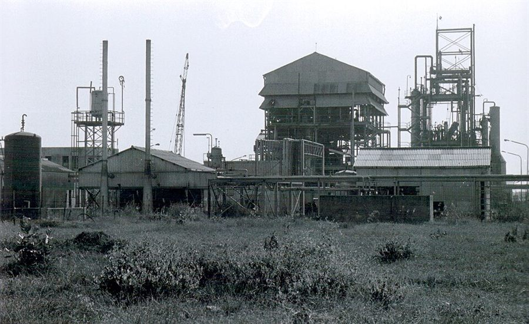
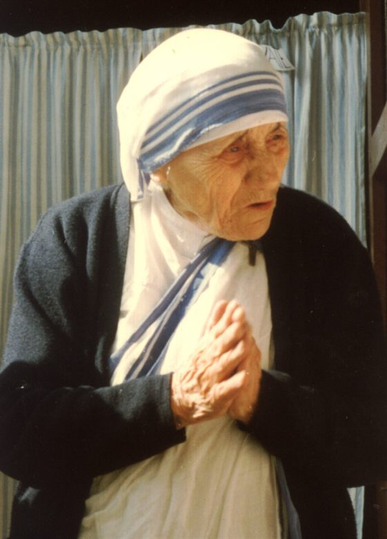
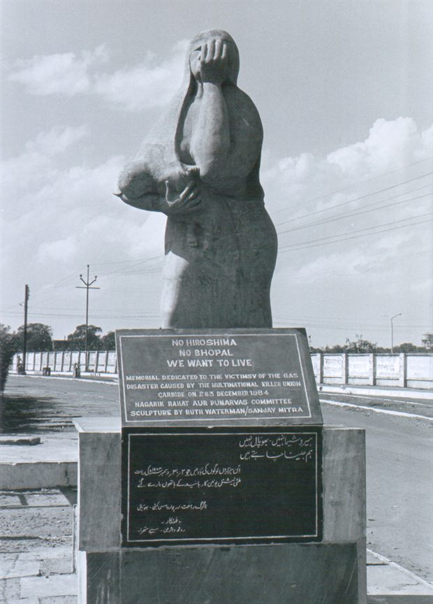

Bhopal é, ao mesmo tempo, uma cidade e uma palavra. Para a química industrial, virou sinônimo do que acontece quando uma substância extremamente reativa encontra um sistema de segurança desligado. Em poucas horas, um único tanque transformou um composto usado para fabricar inseticida em uma das maiores catástrofes provocadas pelo ser humano.
Este artigo reconstrói o que aconteceu, explica a química do isocianato de metila — o gás responsável pela tragédia —, descreve as falhas que tornaram o desastre possível e acompanha o que veio depois: as vítimas, a resposta humanitária (incluindo a visita de Madre Teresa, que deixou Calcutá para confortar os sobreviventes), as batalhas judiciais e as lições que mudaram para sempre a forma como o mundo lida com fábricas perigosas.
§ 01 O que foi o desastre de Bhopal
Bhopal é a capital do estado de Madhya Pradesh, no centro da Índia. Na década de 1970, a Union Carbide India Limited (UCIL), subsidiária da americana Union Carbide Corporation, construiu ali uma fábrica para produzir carbaril (vendido sob a marca Sevin), um inseticida muito usado na agricultura.
Para fabricar o carbaril, a planta produzia e armazenava grandes quantidades de isocianato de metila (MIC, da sigla em inglês methyl isocyanate), um intermediário químico extraordinariamente tóxico e reativo. Na noite do acidente, o tanque subterrâneo identificado como E610 guardava cerca de 42 toneladas de MIC líquido.

Por volta da meia-noite, água acabou entrando nesse tanque. O contato disparou uma reação química violenta e exotérmica: a temperatura e a pressão dispararam, as válvulas de alívio se abriram e uma nuvem de gás — estimada entre 30 e 40 toneladas de MIC, junto com outros produtos de decomposição — vazou para a atmosfera. Mais densa que o ar, a nuvem desceu e se espalhou rente ao solo, justamente sobre os bairros mais pobres e densamente povoados que cercavam a fábrica.
§ 02 A química: o que é o isocianato de metila
O isocianato de metila tem fórmula molecular C₂H₃NO e estrutura CH₃–N=C=O. É um líquido incolor, volátil e de cheiro penetrante, pertencente à família dos isocianatos — compostos que contêm o grupo funcional reativo –N=C=O.
Isocianato de metila (MIC)
Três propriedades explicam por que ele é tão perigoso:
- Reatividade com a água. O MIC reage com a água de forma exotérmica (liberando calor), formando dióxido de carbono e metilamina, entre outros produtos. Quando a quantidade de água é grande e o calor não é removido, a reação se acelera sozinha — é uma reação descontrolada (em inglês, runaway reaction).
- Volatilidade. Com ponto de ebulição de cerca de 39 °C, basta um pequeno aquecimento para que o líquido vire vapor rapidamente.
- Toxicidade. Mesmo em concentrações baixíssimas, o MIC ataca os olhos, as vias respiratórias e os pulmões.
De forma simplificada, a reação que iniciou a tragédia pode ser representada assim:
O calor liberado vaporizou mais MIC e elevou a pressão interna. Como veremos, o sistema refrigerado que deveria manter o tanque a baixa temperatura estava desligado, e os equipamentos projetados para neutralizar ou queimar o gás antes que ele escapasse não funcionaram.
§ 03 A noite de 2 para 3 de dezembro de 1984
Os relatos convergem para uma sequência aproximada de eventos. Por volta das 21h–22h do dia 2 de dezembro, operários perceberam vazamentos e o cheiro característico do MIC. Pouco depois da meia-noite, a pressão do tanque E610 subiu de forma alarmante. A reação já estava descontrolada.
Entre 0h30 e 1h da madrugada, as válvulas de segurança cederam e o gás começou a escapar pela chaminé de alívio. A nuvem se deslocou com o vento sobre bairros como Jai Prakash Nagar e Kazi Camp, e em direção à movimentada estação ferroviária de Bhopal. Milhares de pessoas acordaram sufocando, com os olhos em chamas e tossindo sangue. Muitas morreram em casa ou na fuga; outras foram pisoteadas no pânico.
"Foi como respirar fogo. As pessoas corriam sem saber para onde, caindo no caminho." — Relato recorrente de sobreviventes de Bhopal
§ 04 As vítimas e os efeitos à saúde
Os números de Bhopal são, até hoje, motivo de disputa — em parte porque muitas vítimas eram moradores informais sem registro, e em parte por causa das mortes tardias ao longo dos anos.
- As estimativas imediatas falam em milhares de mortos nas primeiras horas e dias — números oficiais iniciais giram em torno de 2.000 a 4.000, mas levantamentos independentes apontam que cerca de 8.000 pessoas morreram nas duas primeiras semanas.
- Ao longo das décadas seguintes, estima-se que o total de mortes ligadas à exposição tenha chegado a 15.000 a 20.000.
- Mais de meio milhão de pessoas foram expostas ao gás. Muitas sobreviveram com sequelas permanentes.
Os efeitos à saúde incluíram lesões graves nos olhos (incluindo cegueira), edema pulmonar, danos respiratórios crônicos, problemas neurológicos e impactos reprodutivos. Estudos posteriores também associaram a exposição a malformações em bebês nascidos na região.
§ 05 Madre Teresa em Bhopal
Poucos dias após o desastre, em dezembro de 1984, Madre Teresa — já laureada com o Nobel da Paz e uma das figuras humanitárias mais reconhecidas do mundo — deixou Calcutá, a cidade onde fundara as Missionárias da Caridade, e viajou até Bhopal para acompanhar os sobreviventes. Levou consigo religiosas de sua congregação, que se juntaram ao socorro nos hospitais lotados e nos acampamentos improvisados onde milhares de pessoas semicegas e sem ar ainda chegavam.

O que ela fez em Bhopal foi, acima de tudo, presença: percorreu os bairros mais atingidos, visitou os feridos e pôs suas irmãs para cuidar dos moribundos e dos órfãos. Distribuiu pequenas medalhas de alumínio e repetiu uma única mensagem — "perdoem, perdoem". Sua chegada atraiu a imprensa mundial para as favelas ao redor da fábrica e, por um momento, o sofrimento dos moradores mais pobres de Bhopal virou manchete em todo o planeta.
Mas essa mesma mensagem expôs a ferida mais profunda da história — a injustiça. Para sobreviventes que haviam perdido filhos, a visão ou os pulmões, um chamado ao perdão soou prematuro, até deslocado: perdoar quem, e em troca de quê? Nenhum executivo havia sido responsabilizado; nenhuma reparação adequada havia sido paga. As vítimas eram, em sua imensa maioria, os pobres urbanos que viviam espremidos contra os muros da fábrica — gente sem registros, sem poupança e com pouca voz política. A caridade podia confortá-los, mas não podia lhes dar justiça, água limpa ou um réu no banco dos acusados.
Essa tensão atravessa toda a tragédia: de um lado, uma onda de compaixão; de outro, a longa, dura e ainda inacabada busca por responsabilização — tema das próximas seções. Bhopal é lembrada não só como uma catástrofe química, mas como um caso exemplar de como o desastre recai com mais força sobre quem tem menos condições de suportá-lo.
§ 06 As causas: por que a segurança falhou
Bhopal não foi um acidente "natural". Investigações e processos judiciais expuseram uma cadeia de falhas que se acumularam por meses:
- Sistema de refrigeração desligado. O tanque de MIC deveria ser mantido refrigerado para reduzir a reatividade. A unidade de refrigeração havia sido desativada para economizar custos.
- Lavador de gases (scrubber) inoperante. O equipamento que deveria neutralizar o gás com soda cáustica estava em manutenção ou ajustado para uma capacidade muito abaixo da necessária.
- Torre de queima (flare) fora de operação. A torre que deveria incinerar o gás escapado estava desativada para conserto.
- Quadro de pessoal reduzido e treinamento precário. Cortes de custos diminuíram a equipe e a manutenção; alarmes e procedimentos foram negligenciados.
- Excesso de armazenamento. Manter dezenas de toneladas de um intermediário tão perigoso em estoque ampliou enormemente a escala do vazamento.
Em outras palavras: cada barreira de segurança que poderia ter contido ou reduzido o vazamento estava ausente ao mesmo tempo. Em engenharia de segurança, isso é o chamado "alinhamento dos buracos do queijo suíço" — quando várias falhas independentes se sobrepõem e abrem um caminho livre para o desastre.
§ 07 Justiça, indenização e legado jurídico
As consequências legais se arrastaram por décadas e deixaram um sentimento amplo de justiça incompleta:
- Em 1989, a Union Carbide firmou um acordo com o governo indiano no valor de US$ 470 milhões — quantia que muitos consideraram baixa diante da dimensão do dano.
- Warren Anderson, então presidente da Union Carbide, foi indiciado pela Justiça indiana, mas nunca foi extraditado; morreu em 2014 sem responder ao processo na Índia.
- Em 2010, um tribunal indiano condenou sete ex-executivos da UCIL por negligência, com penas consideradas brandas pela opinião pública.
- Em 2001, a Dow Chemical adquiriu a Union Carbide, e a disputa sobre a responsabilidade pela limpeza do local se estendeu para a nova proprietária.
§ 08 A contaminação que não foi embora
O drama de Bhopal não terminou na década de 1980. O terreno da antiga fábrica nunca foi totalmente descontaminado. Resíduos tóxicos abandonados no local contaminaram o solo e o lençol freático, afetando a água consumida por comunidades vizinhas por muitos anos. Gerações que nasceram depois de 1984 continuaram a conviver com os efeitos do desastre, tornando Bhopal também um caso emblemático de injustiça ambiental.
§ 09 O que o mundo aprendeu
Por mais trágico que tenha sido, Bhopal transformou a segurança química no planeta inteiro:
- Nos Estados Unidos, levou à aprovação da Emergency Planning and Community Right-to-Know Act (1986), que obriga indústrias a informar quais substâncias perigosas armazenam e a planejar respostas a emergências com as comunidades.
- A indústria química adotou programas voluntários como o Responsible Care, com foco em transparência e segurança de processos.
- Consagrou o princípio de "química mais segura por projeto": reduzir estoques de intermediários perigosos, produzir sob demanda e preferir rotas que evitem compostos extremamente reativos sempre que possível.
- Reforçou a ideia de que segurança não é um custo a ser cortado, mas parte indissociável da operação de qualquer planta química.
Como evitar outro Bhopal — a química
As lições duradouras não são apenas jurídicas e organizacionais; são químicas. Bhopal aconteceu porque uma grande massa de um intermediário extremamente reativo foi estocada, morna e mal vigiada, ao lado justamente da substância — a água — que dispara sua hidrólise descontrolada. A segurança de processos moderna ataca exatamente esses fatos químicos:
- Não estocar o perigo — eliminá-lo no projeto. A ideia mais importante é a química mais segura por projeto: produzir o isocianato de metila apenas em quantidades mínimas e consumi-lo de imediato na etapa seguinte, em vez de guardar toneladas num tanque. Depois de Bhopal, fabricantes de carbaril migraram para rotas que nunca isolam o MIC em massa (por exemplo, reagindo os componentes em sequência, de modo que o MIC exista apenas por instantes). Quanto menor o estoque, menor o pior vazamento possível.
- Controlar a cinética — manter frio. A reação MIC + água é exotérmica, então o calor que ela libera a acelera ainda mais. Refrigerar o tanque reduz essa química a passos de tartaruga; em Bhopal, a unidade de refrigeração havia sido desligada, removendo o freio que impede o início de uma reação descontrolada.
- Separar substâncias incompatíveis. O gatilho foi a entrada de água no tanque E610. O isolamento rigoroso de produtos reativos em relação à água, a ácidos e a contaminantes metálicos (que também catalisam a decomposição do MIC) é hoje regra básica de projeto.
- Salvaguardas químicas funcionando. Um lavador de soda cáustica (NaOH) neutraliza o isocianato que escapa, e uma torre de queima (flare) o incinera em gases menos nocivos antes que chegue ao ar. Isso só protege uma cidade se estiver ligado, mantido e dimensionado para o pior caso — em Bhopal, nada disso estava.

§ Fontes Referências e leitura
- International Medical Commission on Bhopal — relatórios sobre os efeitos à saúde da exposição ao MIC.
- Eckerman, I. The Bhopal Saga: Causes and Consequences of the World's Largest Industrial Disaster.
- U.S. Chemical Safety Board / EPA — materiais sobre isocianato de metila e a Emergency Planning and Community Right-to-Know Act (EPCRA, 1986).
- Coberturas e arquivos históricos sobre a visita de Madre Teresa a Bhopal em dezembro de 1984.
Os números de vítimas variam entre fontes oficiais e independentes; este artigo apresenta as faixas mais citadas na literatura.